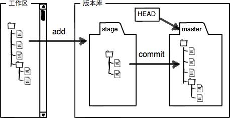
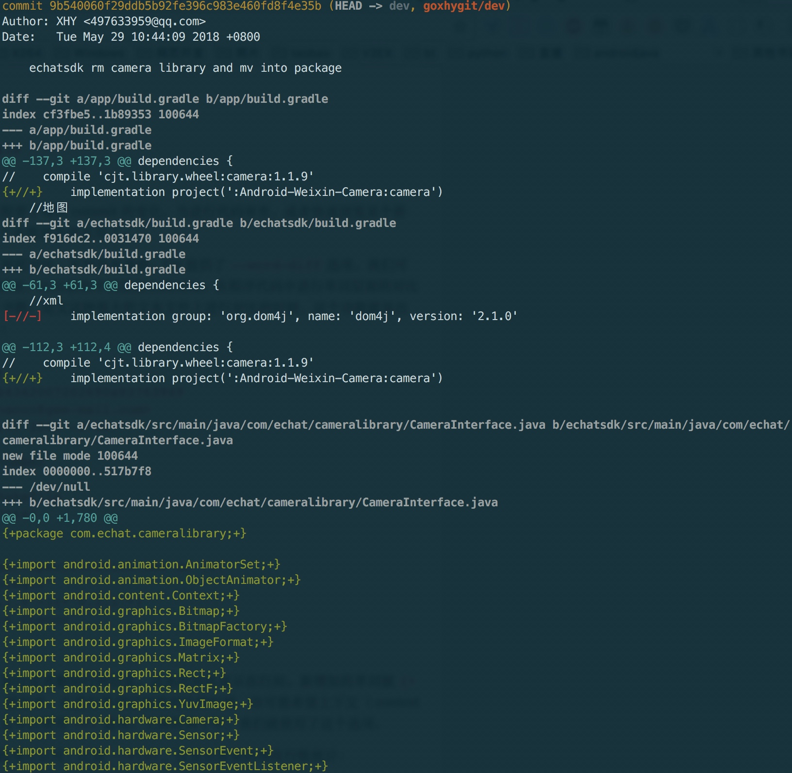
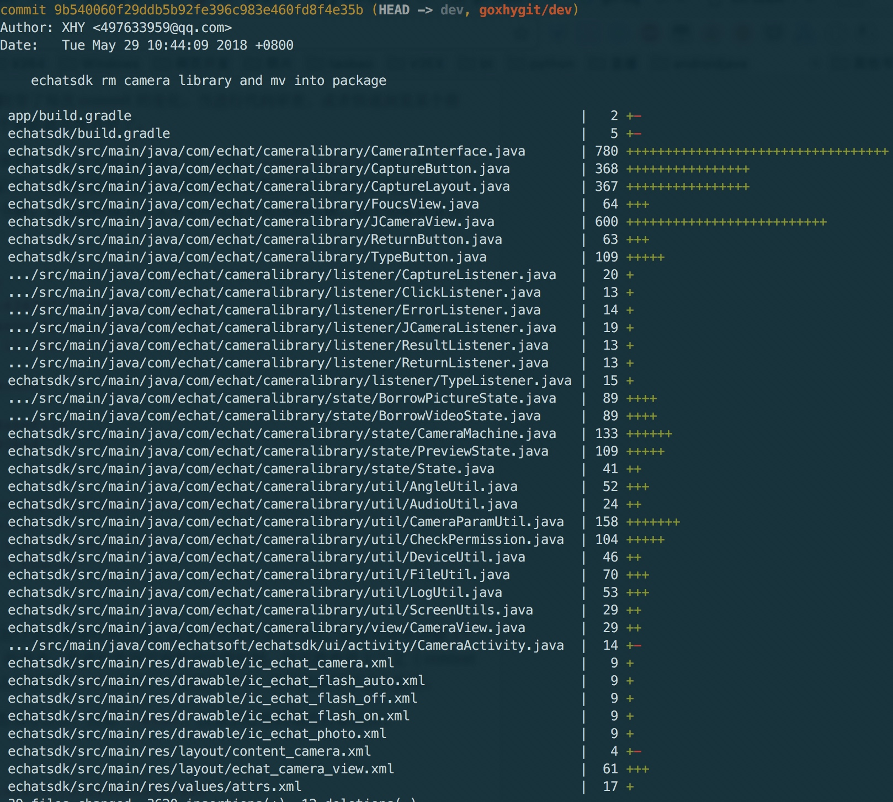
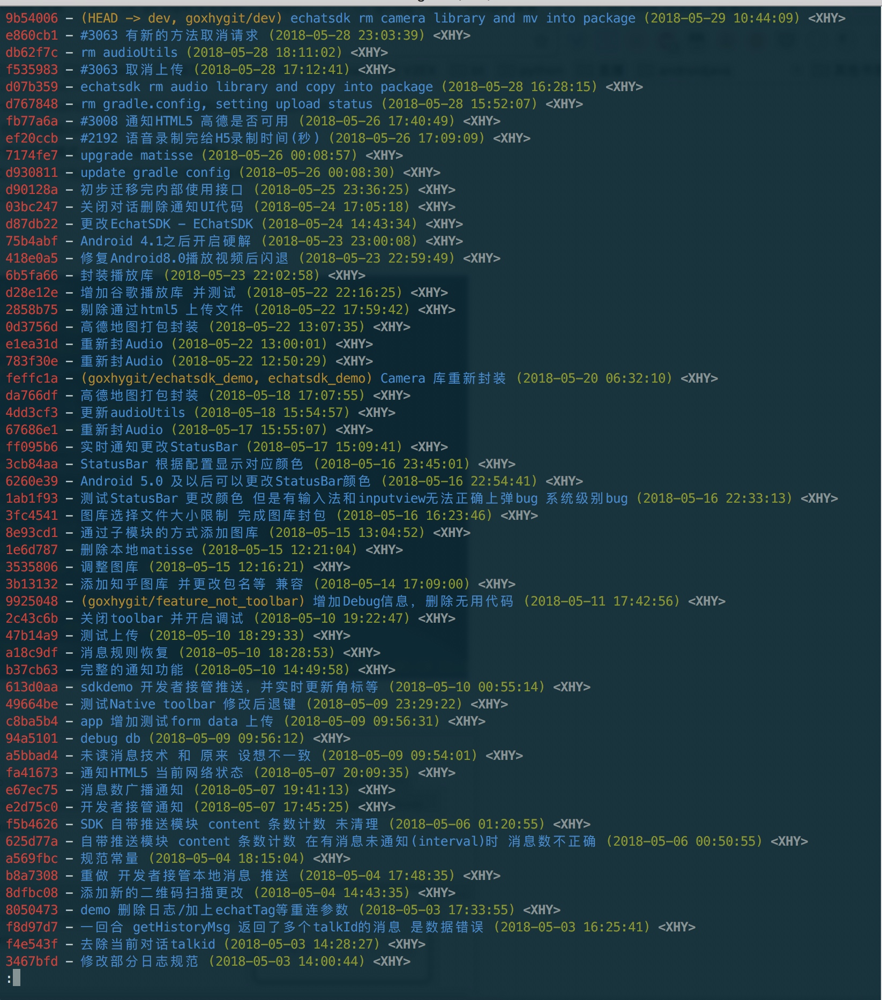

Git整理
入门
初始化git
生成密钥
可以通过命令行ssh-keygen[Windows没有需要安装cmder类似软件支持]，或者PuTTYgen软件生成
$ ssh-keygen -t rsa -C "497633959@qq.com"
Generating public/private rsa key pair.
Enter file in which to save the key (/Users/xuhaoyang/.ssh/id_rsa):
Enter passphrase (empty for no passphrase):
Enter same passphrase again:
Your identification has been saved in /Users/xuhaoyang/.ssh/id_rsa.
Your public key has been saved in /Users/xuhaoyang/.ssh/id_rsa.pub.
The key fingerprint is:
SHA256:LGVPxsHQKFHyMjwcfVNRIZCNpro4ORUHTW6NYhbplSk 497633959@qq.com
The key's randomart image is:
+---[RSA 2048]----+
| =B+Bo*+oo. |
| oE*B+O... |
| .X=B+=. |
| ooXo+ |
| .+S . |
| o. |
| + . |
| = . |
| o |
+----[SHA256]-----+默认生成密钥，公钥id_rsa.pub和私钥id_rsa，注意私钥必须自己保存不能外泄。
初始化git 信息
$ git config --global user.name "Your Name"
$ git config --global user.email "email@example.com"创建版本库
版本库又名仓库，英文名repository。你可以简单理解成一个目录，这个目录里面的所有文件都可以被Git管理起来，每个文件的修改、删除，Git都能跟踪，以便任何时刻都可以追踪历史，或者在将来某个时刻可以“还原”。
创建一个版本库非常简单，首先，选择一个合适的地方，创建一个空目录：
$ mkdir learngit
$ cd learngit
$ pwd
/Users/michael/learngitpwd命令用于显示当前目录。在我的Mac上，这个仓库位于/Users/michael/learngit。
第二步，通过git init命令把这个目录变成Git可以管理的仓库：
$ git init
Initialized empty Git repository in /Users/michael/learngit/.git/一个空的仓库（empty Git repository），细心的读者可以发现当前目录下多了一个.git的目录，这个目录是Git来跟踪管理版本库的，没事千万不要手动修改这个目录里面的文件，不然改乱了，就把Git仓库给破坏了。
如果你没有看到.git目录，那是因为这个目录默认是隐藏的，用ls -ah命令就可以看见。
添加文件到Git仓库，分两步：
第一步，使用命令
git add <file>，注意，可反复多次使用，添加多个文件；第二步，使用命令
git commit，完成。状态命令
要随时掌握工作区的状态，使用
git status命令。如果git status告诉你有文件被修改过，用git diff可以查看修改内容。git diff顾名思义就是查看difference，显示的格式正是Unix通用的diff格式。
版本回退
- 可以通过命令
git log查看Git的历史记录。如果嫌输出信息太多，看得眼花缭乱的，可以试试加上--pretty=oneline参数。 - Git的
commit id是一个SHA1计算出来的一个非常大的数字，用十六进制表示。 - 在Git中，用
HEAD表示当前版本，也就是最新的提交3628164...882e1e0，上一个版本就是HEAD^，上上一个版本就是HEAD^^，当然往上100个版本写100个^比较容易数不过来，所以写成HEAD~100。 - 回退到上一版本的操作
$ git reset --hard HEAD^
HEAD is now at ea34578 add distributed当回退完成之后，如果返回到回退之前的状态的话，可以通过git reflog命令查看git的记录，然后找到想要回退的commit id，就可以使用下面的命令返回到指定的commit。
git reset --hard commit id工作区和暂存区
在本地中，一个项目的目录就是一个工作区。
版本库，工作区有一个隐藏目录.git，这个不算工作区，而是Git的版本库。Git的版本库里存了很多东西，其中最重要的就是称为stage（或者叫index）的暂存区，还有Git为我们自动创建的第一个分支master，以及指向master的一个指针叫HEAD。

我们把文件往Git版本库里添加的时候，是分两步执行的：
- 用
git add把文件添加进去，实际上就是把文件修改添加到暂存区； - 用
git commit提交更改，实际上就是把暂存区的所有内容提交到当前分支。
因为我们创建Git版本库时，Git自动为我们创建了唯一一个master分支，所以，git commit就是往master分支上提交更改。可以简单理解为，需要提交的文件修改通通放到暂存区，然后，一次性提交暂存区的所有修改。
管理修改
Git管理的是修改，当你用git add命令后，在工作区的第一次修改被放入暂存区，准备提交，但是，在工作区的第二次修改并没有放入暂存区，所以，git commit只负责把暂存区的修改提交了，也就是第一次的修改被提交了，第二次的修改不会被提交。
修改commit时间
git commit --amend --date="$(date -R)"撤销修改
使用命令git checkout – file可以丢弃工作的的修改。这里存在两种情况：
- 一种是file自修改后还没有被放到暂存区，现在，撤销修改就回到和版本库一模一样的状态；
- 一种是file已经添加到暂存区后，又作了修改，现在，撤销修改就回到添加到暂存区后的状态。总之，就是让这个文件回到最近一次git commit或git add时的状态。
git checkout -- file命令中的–很重要，没有–，就变成了“切换到另一个分支”的命令。
撤销修改有以下几个场景：
- 当你改乱了工作区某个文件的内容，想直接丢弃工作区的修改时，用命令
git checkout -- file。 - 当你不但改乱了工作区某个文件的内容，还添加到了暂存区时，想丢弃修改，分两步，第一步用命令
git reset HEAD file，就回到了场景1，第二步按场景1操作。 - 已经提交了不合适的修改到版本库时，想要撤销本次提交，可以使用版本回退。
删除文件
一般情况下，可以直接在文件管理器中把没用的文件删了，或者用rm命令删除。
$ rm test.txt这个时候，Git知道你删除了文件，因此，工作区和版本库就不一致了，git status命令会立刻告诉你哪些文件被删除了。
现在有两种情况，一是确实要从版本库中删除该文件，那就用命令git rm删掉，并且git commit。
另一种情况是删错了，因为版本库里还有，所以可以通过命令git checkout --file来进行“一键还原”。
撤出暂存区（或从暂存区删除）
使用 git rm --cached <file>... 撤出暂存区
查看日志log
git log
-p 选项展开显示每次提交的内容差异
--word-diff 从而获取单词层面上的对比
git log –word-diff -U1

--stat 仅显示简要的增改行数统计

--graph 一些 ASCII 字符串表示的简单图形
git log --oneline --stat --decorate --pretty=format:"%h - %an, %ar : %s"| 选项 | 说明 |
|---|---|
| %H | 提交对象（commit）的完整哈希字串 |
| %h | 提交对象的简短哈希字串 |
| %T | 树对象（tree）的完整哈希字串 |
| %t | 树对象的简短哈希字串 |
| %P | 父对象（parent）的完整哈希字串 |
| %p | 父对象的简短哈希字串 |
| %an | 作者（author）的名字 |
| %ae | 作者的电子邮件地址 |
| %ad | 作者修订日期（可以用 -date= 选项定制格式） |
| %ar | 作者修订日期，按多久以前的方式显示 |
| %cn | 提交者(committer)的名字 |
| %ce | 提交者的电子邮件地址 |
| %cd | 提交日期 |
| %cr | 提交日期，按多久以前的方式显示 |
| %s | 提交说明 |
git config --global alias.lm "log --no-merges --color --date=format:'%Y-%m-%d %H:%M:%S' --author='XHY' --pretty=format:'%Cred%h%Creset -%C(yellow)%d%Cblue %s %Cgreen(%cd) %C(bold blue)<%an>%Creset' --abbrev-commit"
git config --global alias.lms "log --no-merges --color --stat --date=format:'%Y-%m-%d %H:%M:%S' --author='XHY' --pretty=format:'%Cred%h%Creset -%C(yellow)%d%Cblue %s %Cgreen(%cd) %C(bold blue)<%an>%Creset' --abbrev-commit"
git config --global alias.ls "log --no-merges --color --graph --date=format:'%Y-%m-%d %H:%M:%S' --pretty=format:'%Cred%h%Creset -%C(yellow)%d%Cblue %s %Cgreen(%cd) %C(bold blue)<%an>%Creset' --abbrev-commit"
git config --global alias.lss "log --no-merges --color --stat --graph --date=format:'%Y-%m-%d %H:%M:%S' --pretty=format:'%Cred%h%Creset -%C(yellow)%d%Cblue %s %Cgreen(%cd) %C(bold blue)<%an>%Creset' --abbrev-commit"
分支管理
创建与合并分支
Git鼓励大量使用分支：
查看分支：git branch
创建分支：git branch <name>
切换分支：git checkout <name>
创建+切换分支：git checkout -b <name>
合并某分支到当前分支：git merge <name>
删除分支：git branch -d <name>
参考文章：创建和合并分支
解决冲突
合并分支时出现冲突的情况：
$ git merge feature1
Auto-merging readme.txt
CONFLICT (content): Merge conflict in readme.txt
Automatic merge failed; fix conflicts and then commit the result.通过使用命令git status可以查看冲突的文件。Git用<<<<<<<，=======，>>>>>>>标记出不同分支的内容。用git log --graph命令可以看到分支合并图。
分支管理策略
通常，合并分支时，如果可能，Git会用Fast forward模式，就是使用命令git merge --no-ff -m "message" branch，但这种模式下，删除分支后，会丢掉分支信息。如果要强制禁用Fast forward模式，Git就会在merge时生成一个新的commit，这样，从分支历史上就可以看出分支信息。
Bug分支
修复bug时，我们会通过创建新的bug分支进行修复，然后合并，最后删除；
当手头工作没有完成时，先把工作现场git stash一下，然后去修复bug，修复后，再git stash pop，回到工作现场。
feature分支
开发一个新feature，最好新建一个分支；
如果要丢弃一个没有被合并过的分支，可以通过git branch -D <name>强行删除。
多人协助
查看远程库
要查看远程库的信息，用git remote
$ git remote
origin或者，用git remote -v显示更详细的信息：
$ git remote -v
origin git@github.com:michaelliao/learngit.git (fetch)
origin git@github.com:michaelliao/learngit.git (push)添加远程库
远程仓库还为空时，或推送到新的一个远程仓库，与本地关联，使用git remote add [origin名字] [git@github.com:michaelliao/learngit.git]
添加后，远程库的名字就是origin，这是Git默认的叫法，也可以改成别的，但是origin这个名字一看就知道是远程库。
下一步，就可以把本地库的所有内容推送到远程库上：
$ git push -u origin master
Counting objects: 19, done.
Delta compression using up to 4 threads.
Compressing objects: 100% (19/19), done.
Writing objects: 100% (1a9/19), 13.73 KiB, done.
Total 23 (delta 6), reused 0 (delta 0)
To git@github.com:michaelliao/learngit.git
* [new branch] master -> master
Branch master set up to track remote branch master from origin.取消远程与本地库关联
git remote remove [origin/名字]抓取分支
多人协作时，大家都会往master和dev分支上推送各自的修改。
当你的小伙伴从远程库clone时，默认情况下，你的小伙伴只能看到本地的master分支。
现在，你的小伙伴要在dev分支上开发，就必须创建远程origin的dev分支到本地，于是他用这个命令创建本地dev分支：
$ git checkout -b dev origin/dev如果克隆指定分支
$ git clone -b dev [地址]现在，他就可以在dev上继续修改，然后，时不时地把dev分支push到远程。
你的小伙伴已经向origin/dev分支推送了他的提交，而碰巧你也对同样的文件作了修改，并试图推送。这时就会推送失败，因为你的小伙伴的最新提交和你试图推送的提交有冲突，解决办法也很简单，Git已经提示我们，先用git pull把最新的提交从origin/dev抓下来，然后，在本地合并，解决冲突，再推送。有时git pull也会失败，原因是没有指定本地dev分支与远程origin/dev分支的链接，根据提示，设置dev和origin/dev的链接（建立本地分支和远程分支的关联，使用git branch --set-upstream branch-name origin/branch-name）：
$ git branch --set-upstream dev origin/dev
Branch dev set up to track remote branch dev from origin.再pull：
$ git pull
Auto-merging hello.py
CONFLICT (content): Merge conflict in hello.py
Automatic merge failed; fix conflicts and then commit the result.这回git pull成功。
推送本地分支到远程新分支
命令git push origin <本地分支name>:<远程分支name>，将本地推送的远程新分支，注意推送成功后，再次用git push是无法直接推送成功，
git push origin dev:dev强制覆盖本地文件
git fetch --all
git reset --hard origin/master
git pull删除远程分支
如果不再需要某个远程分支了，比如搞定了某个特性并把它合并进了远程的 master 分支（或任何其他存放稳定代码的分支），可以用这个非常无厘头的语法来删除它：git push [远程名] :[分支名]。如果想在服务器上删除 serverfix 分支，运行下面的命令：
$ git push origin :serverfix
To git@github.com:schacon/simplegit.git
- [deleted] serverfixGit合并指定commit到当前分支(cherry-pick/rebase)
有时我们需要将指定的某一次commit合并到当前分支，比如线上的一次bugfix，只合并需要的commits。
首先，用git log或GitX工具查看一下你想选择哪些commits进行合并，例如：
dd2e86 - 946992 -9143a9 - a6fd86 - 5a6057 [master]
\
76cada - 62ecb3 - b886a0 [feature]比如，feature 分支上的commit 62ecb3 非常重要，它含有一个bug的修改。你现在只需要将62ecb3 合并到master，而不合并feature上的其他commits，所以我们用git cherry-pick命令来做：
> git checkout master
> git cherry-pick 62ecb3这样就好啦。现在62ecb3 就被合并到master分支，并在master中添加了commit（作为一个新的commit）。cherry-pick 和merge比较类似，如果git不能合并代码改动（比如遇到合并冲突），git需要你自己来解决冲突并手动添加commit。
合并某个分支上的一系列commits
在一些特性情况下，合并单个commit并不够，你需要合并一系列相连的commits。这种情况下就不要选择cherry-pick了，rebase 更适合。还以上例为例，假设你需要合并feature分支的commit76cada ~62ecb3 到master分支。
首先需要基于feature创建一个新的分支，并指明新分支的最后一个commit：
git checkout -bnewbranch 62ecb3然后，rebase这个新分支的commit到master（–ontomaster）。76cada^ 指明你想从哪个特定的commit开始。
> git rebase --ontomaster 76cada^得到的结果就是feature分支的commit 76cada ~62ecb3 都被合并到了master分支。
通过Git rebase -i 修订历史commit
标签管理
发布一个版本时，我们通常先在版本库中打一个标签，这样，就唯一确定了打标签时刻的版本。将来无论什么时候，取某个标签的版本，就是把那个打标签的时刻的历史版本取出来。所以，标签也是版本库的一个快照。
Git的标签虽然是版本库的快照，但其实它就是指向某个commit的指针，
所以，创建和删除标签都是瞬间完成的。
创建标签
- 命令
git tag <name>用于新建一个标签，默认为HEAD，也可以指定一个commit id； git tag -a <tagname> -m "blablabla..."可以指定标签信息；git tag -s <tagname> -m "blablabla..."可以用PGP签名标签；- 命令
git tag可以查看所有标签。
操作标签
- 命令
git push origin <tagname>可以推送一个本地标签； - 命令
git push origin --tags可以推送全部未推送过的本地标签； - 命令
git tag -d <tagname>可以删除一个本地标签； - 命令
git push origin :refs/tags/<tagname>可以删除一个远程标签。
优雅的删除子模块
# 逆初始化模块，其中{MOD_NAME}为模块目录，执行后可发现模块目录被清空
git submodule deinit {MOD_NAME}
# 删除.gitmodules中记录的模块信息（--cached选项清除.git/modules中的缓存）
git rm --cached {MOD_NAME}
# 提交更改到代码库，可观察到'.gitmodules'内容发生变更
git commit -am "Remove a submodule." 常见错误
要push代码到git时，出现提示：
error:failed to push some refs to ...
Dealing with “non-fast-forward” errors
From time to time you may encounter this error while pushing:
$ git push origin master
To ../remote/
! [rejected] master -> master (non-fast forward)
error: failed to push some refs to '../remote/'
To prevent you from losing history, non-fast-forward updates were rejected
Merge the remote changes before pushing again. See the 'non-fast forward'
section of 'git push --help' for details.问题（Non-fast-forward）的出现原因在于：git仓库中已经有一部分代码，所以它不允许你直接把你的代码覆盖上去。可以有两种解决方法:
- 使用命令
git push -f强推，利用强覆盖方式用你本地的代码替代git仓库内的内容。 - 先把
git的东西fetch到你本地然后merge后再push
$ git fetch
$ git merge这2句命令等价于
$ git pull可是，这时候又出现了如下的问题：
上面出现的 [branch “master”]是需要明确(.git/config)如下的内容
[branch "master"]
remote = origin
merge = refs/heads/master这等于告诉git 2件事:
1，当你处于master branch, 默认的remote就是origin。
2，当你在master branch上使用git pull时，没有指定remote和branch，那么git就会采用默认的remote（也就是origin）来merge在master branch上所有的改变
如果不想或者不会编辑config文件的话，可以在bush上输入如下命令行：
$ git config branch.master.remote origin
$ git config branch.master.merge refs/heads/master之后再重新git pull。最后git push代码吧。